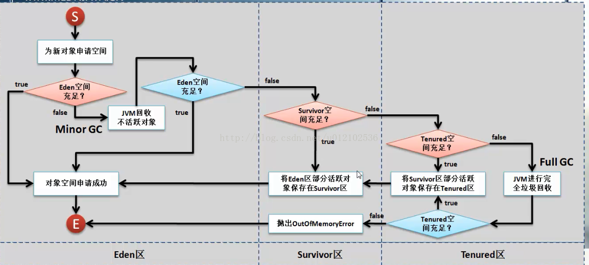

Think in java(Java编程思想)笔记
阅读java编程思想，用笔记辅助记忆！
Primitive类型(基元类型)
在这里我借鉴了CLR via c#的翻译，将它翻译为基元类型以区别于Wrapper类型
| 基元类型 | 大小(bit) | 封装器类型 |
|---|---|---|
| boolean | 1 | Boolean |
| char | 16 | Character |
| byte | 8 | Byte |
| short | 16 | Short |
| int | 32 | Integer |
| long | 64 | Long |
| float | 32 | Float |
| double | 64 | Double |
| Void | Void |
说明：基元类型存储在内存
堆栈(Stack)上，封装器类型存储在内存堆(Heap)上。
类成员变量(基元类型或封装器类型)都默认在new对象的时候初始化，但是函数里面的”局部”变量不会初始化并且java编译器会给出编译期错误警告！
有包名的情况下编译(javac)及运行(java)
创建了带包名的.java源文件，编译之后运行报错：找不到或无法加载主类。
例如：在src/com/aiyoe下创建文件Stuent.java
- 包名称需同目录名称一致
public的类名需同文件名一致
//需一致 package com.aiyoe public class Student{ }
编译运行步骤如下：
cd src/com/aiyoe
javac Student.java
#注意运行的时候要返回到包的最外层目录，此处为src
cd src
#运行时候要使用类的全名，即带上包名称！
java com.aiyoe.Student
深刻理解classpath
项目文件夹结构如下
src
com
- aiyoe
- Main.java
util
Console.java
//Main.java import static util.Console public class Main{ }//Console.java public Console{ public static void write(Object o){ System.out.print(o); } }
- aiyoe
当进入src/com/aiyoe目录下直接编译Main.java文件的时候会报错,找不到包util
需要先进入src/util目录先编译Console.java
cd src/util
javac Console.java
然后再进入src/com/aiyoe编译Main.java还是报错
因为javac编译文件的时候在没有设置classpath的时候，是在当前目录下查找字节码文件，当通过import语句引入包中的具体类的时候，
会将包名中的.替换成/并在当前目录下查找，举例：
当前路径为src/com/aiyoe,引入的包路径为import util.Console,所以会在以下路径/src/com/aiyoe/util/Console.class查找文件，当然是找不到的，
所以编译文件的时候最好指定classpath
#当前目录为src/com/aiyoe
javac -cp ../../ com.aiyoe.Main.java
这样就会去src目录底下寻找util/Console.class文件以及com/aiyoe/Main.java文件进行编译
同理运行的时候也一样，最好指定classpath
#先进入src目录
cd src
java -cp . com.aiyoe.Main
#注意需要使用java虚拟机运行的带main函数的class，需要指定全名(带包路径的的名称)
推荐-编译(javac)和运行(java)操作都在src目录底下进行
将当前目录添加到classpath
cd src
#编译Console.java
javac util/Console.java
#编译Main.java
javac com/aiyoe/Main.java
#运行main函数
java -cp . com.aiyoe.Main
说明：编译指定相对路径，运行指定
classpath及类全名！
异常说明
异常说明，使你能以礼貌的方式告知客户端程序员某个方法可能会抛出异常。它属于方法声明的一部分，紧跟在形式参数列表之后！Java 强制使用这个语法
异常说明使用了附加的关键字throws:
void f() throws TooBig,TooSmall { //...
}
代码必须与异常说明保持一致。如果方法里的代码产生了异常却没有进行处理，编译器会发现这个问题并提醒你：
要么处理这个异常，要么就在异常说明中表明此方法将产生异常。
通过这种自顶向下的强制执行的异常说明机制，Java在编译时就可以保证一定水平的异常正确性。
不过还是有个能”作弊”的地方：可以声明方法将抛出异常，实际上却不抛出。编译器相信了这个异常声明,并强制调用此方法的客户像真的有抛出异常那样使用
这个方法。这样做的好处是，为异常先占个位子，以后就可以抛出这个异常而不用修改已有的代码。在定义抽象基类和接口时这种能力很重要，这样派生类或接口实现
就能够抛出这些预先声明的异常。
这种在编译时被强制检查的异常称为被检查的异常。
有被检查的异常自然就有不被检查的异常
特例：RuntimeException(不被检查的异常)
属于运行时的异常的类型有很多，它们会自动被java虚拟机抛出，所以不必在异常说明中把它们列出来。这些异常都是从[RuntimeException]( ‘点我访问’)类继承,它们也被称为”不受检查异常”。这种异常属于错误，将被自动捕获，就不用你亲自动手了。不过尽管通常不用捕获RuntimeException异常，但还是可以在代码中抛出RuntimeException异常。
RuntimeException 是一个特例。对于这种异常类型，编译器不需要异常说明，其输出被报告给了System.err。
所以答案是：如果 RuntimeException 没有被捕获二直达main(),那么程序退出前将调用异常的 printStackTrace() 方法。
请务必记住：只能在代码中忽略RuntimeException(及其子类)类型的异常,其他类型异常的处理都是由编译器强制实施的。究其原因，RuntimeException代表的是编程错误：
1. 无法预料的错误。比如你从控制范围之外传递进来的null引用
2. 应该在代码中进行检查的错误。(比如对于ArrayIndexOutOfBoundsException,就得注意下数组的大小了。)在一个地方发生的异常，常常会在另一个地方导致错误。
GC

线上产品频繁GC，也就是产生了内存泄露该如何处理？
java的jdk(bin目录)里面提供了很多套件
1. 使用jps查看java应用程序进程名和端口号
jps -lv
使用jstat命令查看内存时候泄露，FGC是否频繁释放
jstat -gcutil 进程ID 多少毫秒执行一次 //例如 jsp -lv jstat -gcutil 12544 3000或者使用可视化工具jconsole查看内存、CPU等使用情况
查看GC日志，需要配置java虚拟机jvm参数
java -? java -XX:+PrintGCDetails使用jmap生对存储快照dump文件
jmap histo:live vmid //histo是histogram简写，直方图的意思 jmap histo:live 95521也可以将dump生成下来使用jvisualvm可视化工具或者jhat查询分析
//使用jmap生成 jmap -dump:live,format=b,file=heap-dump.bin <pid> //其中的pid是JVM进程的id，heap-dump.bin是生成的文件名称，在执行命令的目录下面。 //使用jconsole可视化工具生成 //在JVM中添加参数生成 java -XX:+HeapDumpOnOutOfMemoryError
使用jvisualvm查看的时候可以使用QQL查询Referrers
多线程
说到多线程首先要谈到的就是内存，内存结构以及内存可见性。多线程之间的通信(涉及到同步、锁等)由java内存模型(JMM)控制。JMM将内存分为两种类型，一种是堆内存(称为主存main memory),线程间的共享变量存放处。另一种是线程自身的内存(称为本地内存local memory),存储了自身的可以访问主内存变量的副本，只对线程本身可见！
由于不同的线程，对同一对象的写操作在local memory(Main memory的副本)上，读操作都是从main memory上读取。
如果想线程不共享对象变量可以使用ThreadLocal线程本地存储，这样写/读操作都直接在local memory上进行！
由于local memory和main memory不同步的原因，引出了Atomicity(原子性)和Volatility(易变性)
Atomicity(原子性)
原子性即不可再分性，也就是对对象的操作在汇编代码或者IL中间代码下，一步即可完成的操作。
简单的赋值操作和返回操作可视为原子性，其它的操作最好不要视为原子操作！
//---赋值和返回
int i=10;//原子操作
return i;//原子操作
//以下操作不一定是原子操作
i++;
i+=2;
Volatility(易变性)
可以将类的字段用关键字volatile修饰，这样这个字段会事实强制刷新线程local memory的值到main memory,实现不同线程之间的数据同步共享！
最佳实践
- 能使用同步的地方尽量使用同步synchronized,同步也会导致线程内存向主存中刷新
- 使用volatile而不是synchronize唯一安全的情况是类中只有一个可变的字段(filed),并且不同线程对该字段的操作必须是原子操作！即仅仅是赋值或者返回操作
多线程之间对同一对象的写操作和读操作都必须应用同步
public class AtomicityTest implements Runnable{ private int i=0; public int getValue(){return i;} private synchronized void setValue(){i++;i++} public void run(){ while(true){ setValue(); } } } /* 由于只有setValue应用了同步，假设现在有A,B两个线程使用同一个AtomicityTest对象： A线程调用run()修改了i的值，由于setValue应用了同步synchronized，会刷新i值到主内存 B线程调用getValue得到是线程本地变量，很有可能不是最新的值，非线程安全。 安全的作法getValue也要使用关键字synchronized,强制B线程刷新主存数据到B本地线程 */